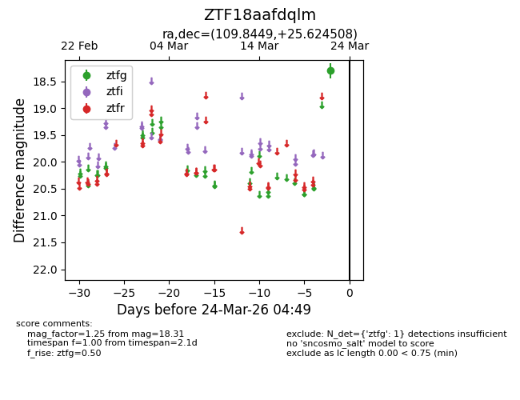
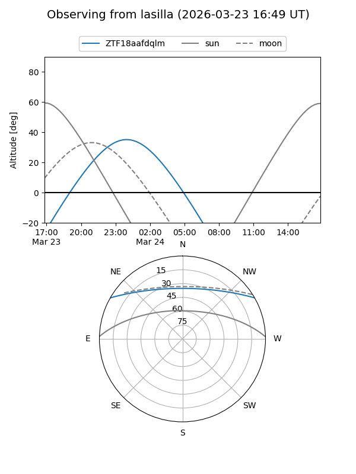
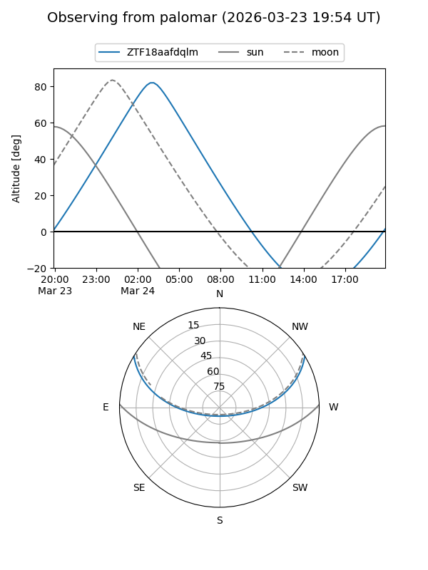

ZTF18aafdqlm
Target ZTF18aafdqlm at 2026-03-24 04:53
Aliases and brokers:
FINK: link
Lasair: link
ALeRCE: link
alt names
ZTF18aafdqlm (ztf,fink_ztf)
Coordinates:
equatorial (ra, dec) = 109.8449,+25.62451
equatorial (HMS+DMS) = 07:19:22.79,+25:37:28.23
galactic (l, b) = (192.4160,+17.14511)
Flags:
Photometry:
last ztfg=18.31
1 ztfg detections
Lightcurve

Visibility


Additional plots